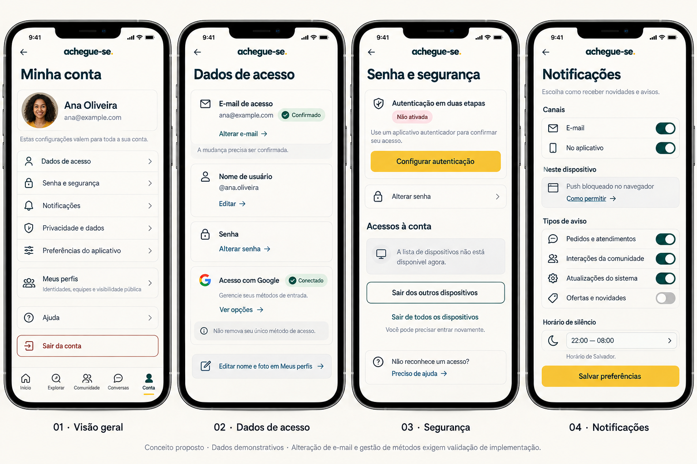
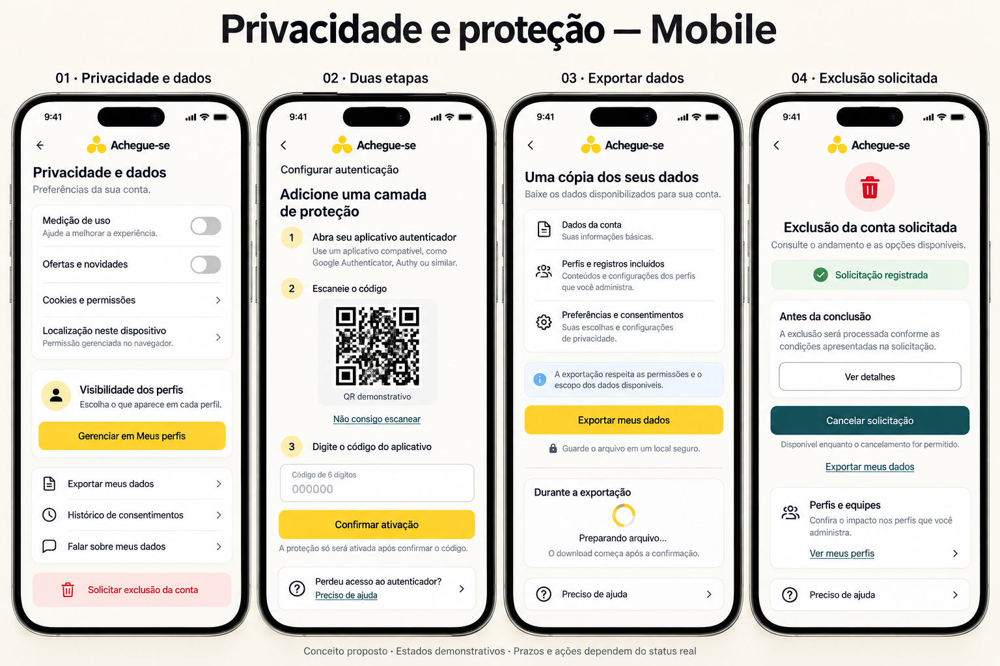
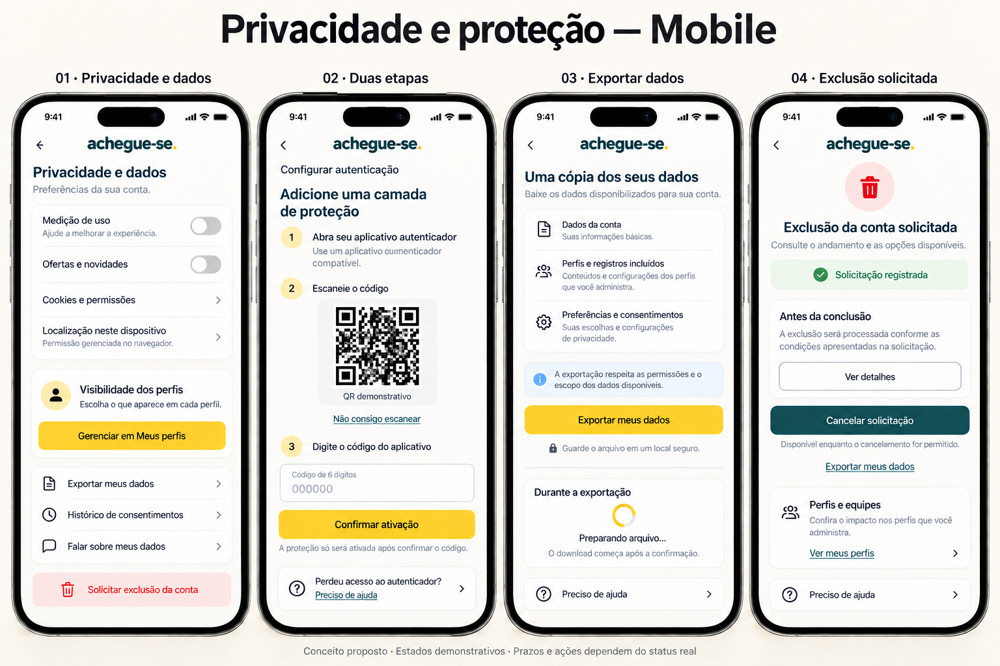
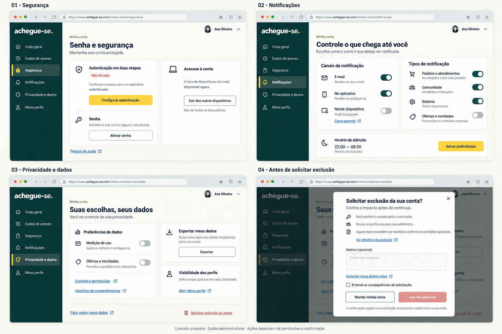

← CatálogoMinha conta, segurança e privacidade
Dados, senha, MFA, notificações, exportação e exclusão. Revogação individual de sessão e métodos de acesso não devem ser presumidos disponíveis.
Documento da página · Registro da revisão

068-minha-conta-mobile · Referência para revisão
069-privacidade-mobile-inicial · Histórico — não aplicar automaticamente
070-privacidade-mobile · Referência para revisão
071-minha-conta-desktop · Referência para revisão